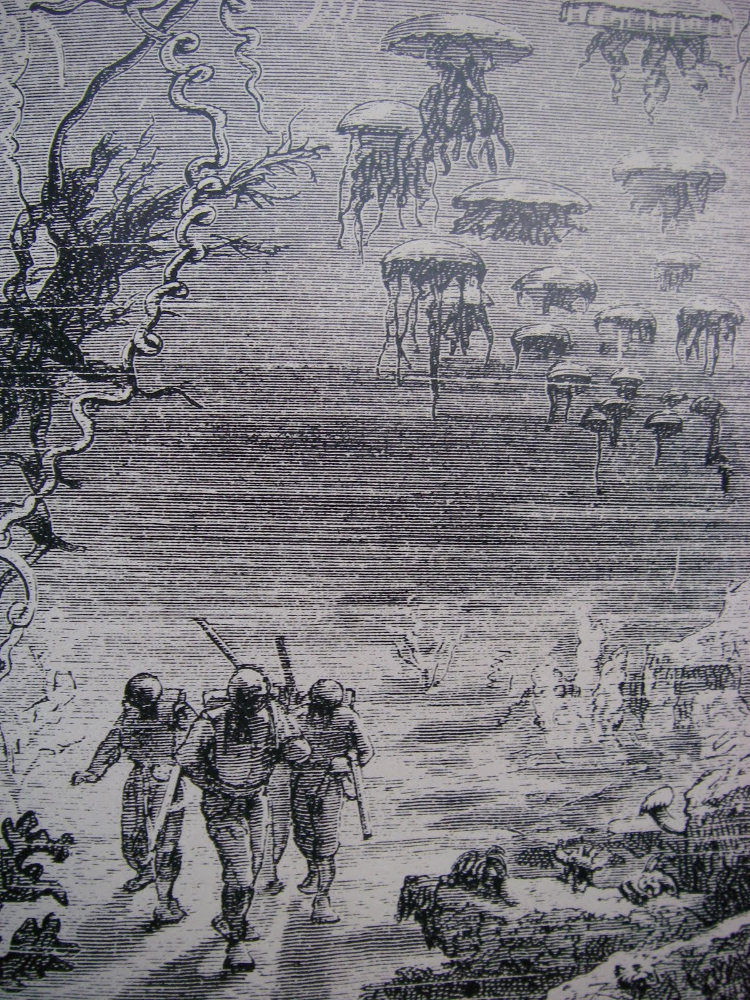

Thursday, December the 15th, 2011
back to: title, date or indexes
Today's thrilling advent calendar picture shows what happened next in the as yet unwritten adventures of the men with whisks and celery. As you can see, the whisks have been discarded, as has the celery, and our trio of doughty ne'er-do-wells are engaged upon a perilous subaquatic mission, pursued by giant jellyfish (actual size).

Picture from Surf : Karmic Voyager